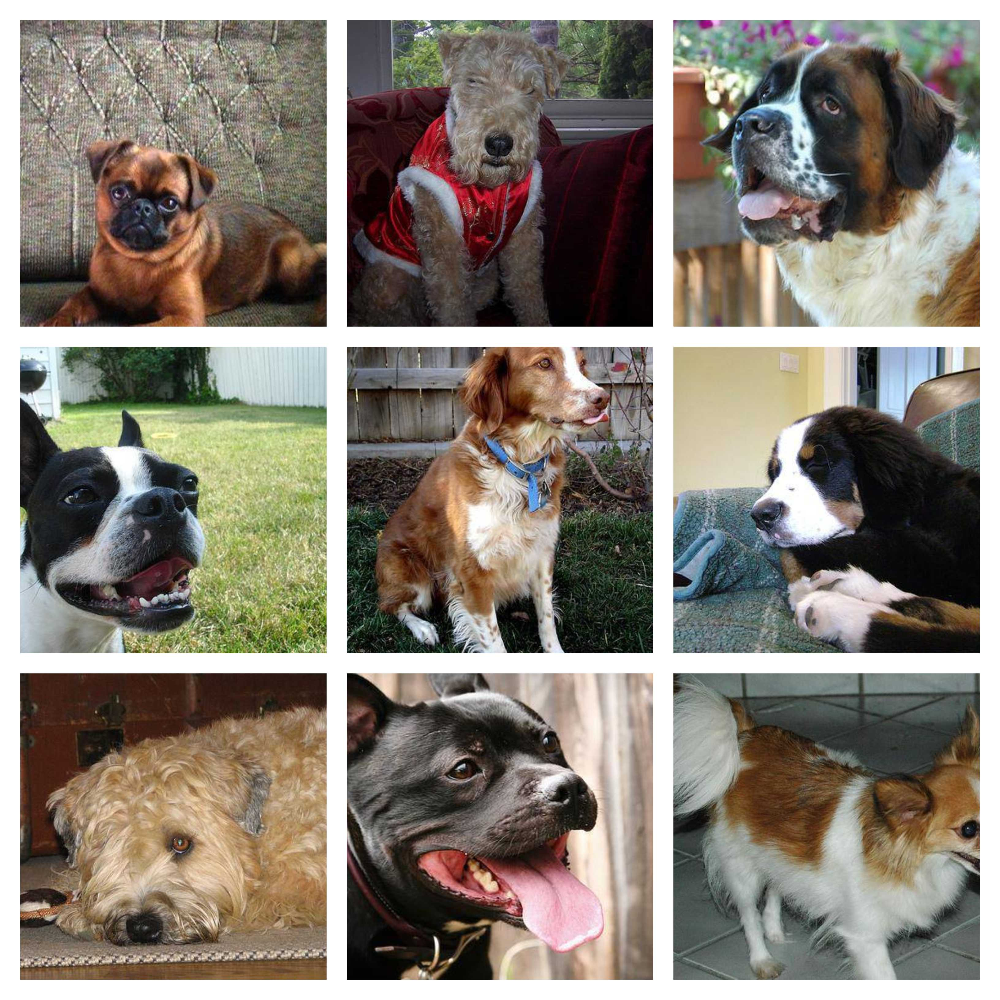
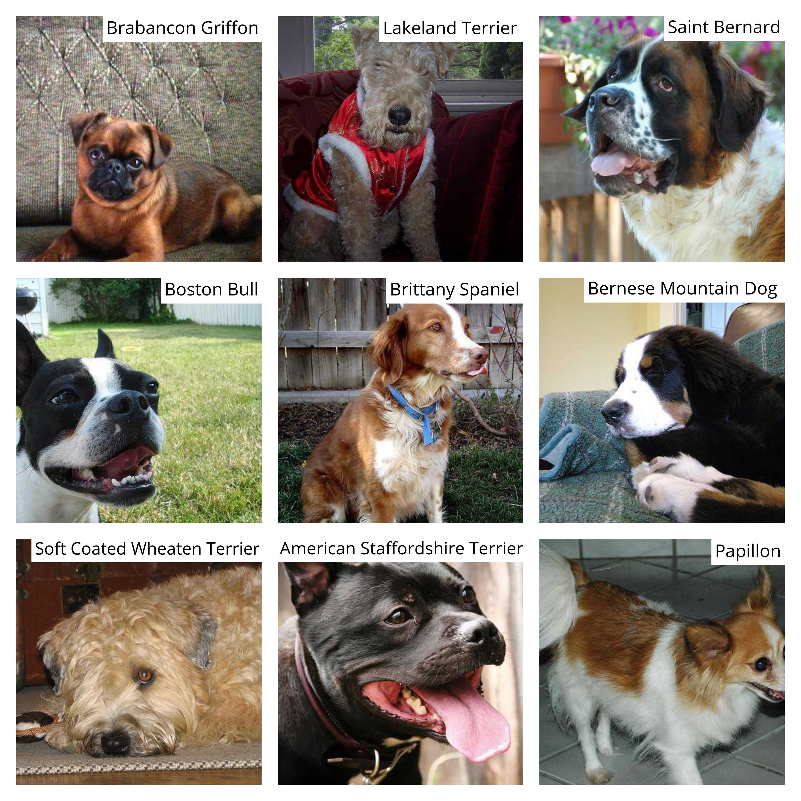

Human Like Abilities - In 30 Lines of Code
Recent advances in deep learning have invigorated interest in data driven AI. Previous solutions to problems involving hand crafted features have been replaced by algorithms which take care of these steps for us – promoting data driven methods to a new level of radical empiricism. And the results can be pretty amazing. In part one of this series we’ll build a deep learning neural network for image classification in 30 lines of python code. These types of models are now outperforming human experts in a range of fields, from playing games to detecting tumors. While trying not to make things too technical, it’s useful to look at an example for a couple of reasons. Firstly, to show what we can now do in just a few lines of python code. And secondly, I hope that running through the steps will allow you to witness the results first hand.
As impressive (and now easy to use) as this technology is, it’s worth considering the limitations of machine learning and big data to serve up inference given any data we give it. In Part 2 of this series, we look at a problem known as Simpson’s paradox for which deep learning apparently has no answer. In finding answers to this problem we’ll need to take a different tack.
Deep Learning in Python
In this section we’ll use a ResNeXt-101 model to identify 120 breeds of dog from images. The results are quite amazing and you’ll shortly have an opportunity to go head-to-head with the computer to see what it (and you) can do! The ResNeXt architecture, developed by Facebook, is one of the latest developments in the arms race of deep learning, placing second in the 2016 ILSVRC image recognition competition. It’s new architecture is more efficient than previous designs, meaning that it can outperform networks that have more layers and more parameters1. Facebook provide a pre-trained version of the neural network with all the weights already tuned on millions of images from the ImageNet library. The rather large download size of 638 MB reflects the size of the network. It has 44 million parameters spread across its 101 layers! Ten years ago neural networks typically had 3-5 layers. New optimization algorithms, regularization techniques and other innovations have removed the depth limitations and ushered in the deep revolution.
Running the Code
The code is provided in two sections, setup and training. If you want to run the code you’ll need an environment with the fast.ai library installed. Various options for doing this are discussed in lesson 1 & 2 of Jeremy Howard’s Practical Deep Learning course. The code below is based on the lesson 2 workbook. For data we use the images provided by the Kaggle Dog Breed Competition which consists of 10,222 labeled images for fitting a model.
The Challenge
In the code below we’ve set aside 10% of the data for validation. Figure One shows 9 images randomly selected from the validation data. How many breeds can you recognise? A little later we’ll check on the answers and see how the computer did.
Figure One - 9 Random Dogs 
Deep Learning Setup
First up, we import the fastai library and set some parameters:
- arch: architecture selection (various architectures are supported by fastai)
- label_csv: a list of class labels for each dog image (for fitting the neural network).
- val_idxs: a list of images for validation. Here we randomly set aside 10% of fitting data to measure training performance
'''
import the python libraries required for deep learning
'''
from fastai.imports import *
from fastai.torch_imports import *
from fastai.transforms import *
from fastai.conv_learner import *
from fastai.model import *
from fastai.dataset import *
from fastai.sgdr import *
from fastai.plots import *'''
initialization
'''
PATH = "/data/fastai/dogbreeds/"
arch = resnext101_64
label_csv = f'{PATH}labels.csv'
n = len(list(open(label_csv))) - 1 # header is not counted (-1)
val_idxs = get_cv_idxs(n,val_pct=0.1) # random 10% data for validation setThe code block below provides a helper function for getting the data and creates the model. The tfms_from_model function transforms each image randomly, including cropping, slightly rotating the image, readjusting the lighting, randomly flipping (mirroring) the image and zooming in. The idea here is that for each pass of the training set the neural network will see small variations in the same image. This helps with learning as we want the model to avoid memorizing the data set and instead learn to recognise the key characteristics of each breed. In other words we want the model to be able to generalize on dog images it has never seen before.
Finally the call to the ConvLearner.pretrained function gets the pretrained ResNeXt model and modifies it for the data set provided. In this case we have 120 dog breeds, so we’ll need to replace the existing output layer with a new one which has 120 output units (each output will produce a probability for the associated breed of dog). The parameter xtra_fc=[2048,512] asks for 2 fully connected layers of size 2048 and 512 to be added before output. We’ve also set the dropout parameters ps=[0.5,0.5,0.4] to guard against overfitting. That’s it for setup, next up we can train the new model on the dog images.
'''
get data and pre-trained model
'''
def get_data(sz, bs): # sz: image size, bs: batch size
tmfs = tfms_from_model(arch, sz, aug_tfms=transforms_side_on, max_zoom=1.1)
data = ImageClassifierData.from_csv(PATH, 'train', f'{PATH}labels.csv', test_name='test',
val_idxs=val_idxs, suffix='.jpg', tfms=tfms, bs=bs)
return data
data = get_data(sz, bs)
learn = ConvLearner.pretrained(arch, data, precompute=True, xtra_fc=[2048,512],ps=[0.5,0.5,0.4])Training the Deep Neural Network
In the setup stage we took a pretrained ResNeXt model, chopped the end off it and added some custom layers in place. During this step the ConvLearner.pretrained function also froze all the weights of the pretrained model. This means that when we call learn.fit in the code below, we’re only training the final custom layers and leaving all the pretrained layers as they are. This works well in this case because the pretrained model is based on the ImageNet library which includes lots of images of the natural environment, including animals such as dogs. For this reason we don’t fine tune the pretrained layers, although this is often helpful.
'''
training Phase 1 - use precomputed activations
'''
learn.fit(lrs=0.01, n_cycle=25, cycle_len=1)
'''
training Phase 2 - turn off precompute to use augmentation
'''
learn.precompute = False
learn.set_data(get_data(sz=244, bs=177))
learn.fit(lrs=0.01, n_cycle=10, cycle_len=1)
learn.set_data(get_data(sz=224, bs=210))
learn.fit(lrs=0.01, n_cycle=15, cycle_len=1)Training proceeds in two phases. In Phase 1 precomputed activations are used to speed up training. Precomputing takes all the images and passes them through the pretrained layers of the network to calculate the internal neural network activations for each image. This takes a few minutes, but is only done once. For each image, the relevant activations can then be sent straight to the final layers for training. Training these last layers is super fast with 25 cycles taking less than a minute.
However, recall we talked about transforming each image to improve learning. Each time the image changes, new activations are triggered. So precompute precludes working with transformations. To use transformation we turn precompute off in Phase 2. We also rescale the data to different sizes to help improve generalization and guard against overfitting.
That’s it, a custom deep learning neural network in less than 30 lines of python code. Let’s take a look at performance.
''' get class probabilities using test-time-augmentation (TTA) '''
log_preds, y = learn.TTA()
probs = np.mean(np.exp(log_preds),0)
''' calculate validation set accuracy '''
accuracy_np(probs, y), metrics.log_loss(y, probs)The code above checks the accuracy on the 1,022 validation images the neural network didn’t see during training. And the result… 93.8% correct! Below are the true answers to the quiz posed earlier:

How many did you get correct?
If you’re like me, you’d probably rather not say. Of the 9 images above, the neural network got 8 of them correct. The computer classified the american staffordshire terrier as a staffordshire bull terrier. The notebook with the results is embedded below, and can also be downloaded here.
In the last five years deep learning has become increasingly accessible not to mention performant. It’s almost tempting to take it for granted. But let’s not forget the thousands of researchers and billions of dollars spent making the breakthroughs necessary to get us to this point.
In the broader context of AI, what do these human like abilities mean? To answer this questions we need to appreciate what neural networks can’t do, which is the focus of Part 2 in this series.
References
1 In their paper the authors explain the NeXt in ResNeXt refers to the next dimension, meaning the introduction of a cardinality dimension as an alternative to greater depth and width. The authors claim the 101 layer ResNeXt architecture outperforms a 200 layer version of the older ResNet architecture.